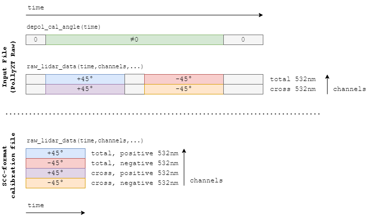

PollyXT netCDF files can be converted to SCC netCDF files using the create-scc
command. It can operate on single files or whole directories.
pollyxt_pipelines create-scc [--interval <...>] [--round] [--no-calibration] [--start-time <...>] <input> <location> <output-path>
input required: Path to PollyXT NetCDF files. Can either be a single file or a directory
--recursive: If input is a directory and this option is set, it will be searched recursively.
location required: Where did the Polly measurement take place (i.e. station name)
output-path required: Directory to write the output files. It will be created if it does not exist
--interval=: Set the interval (in minutes), in which to split PollyXT files.
--atmosphere=: Select what kind of atmosphere to use: standard (default), radiosonde, cloudnet, automatic
--no-calibration: Do not create calibration files
--start-time: When to start the first file (see below for format). If end-hour is defined, a file of the chosen length will be created. Otherwise the intervals will start from this time.
--end-time: In combination with --start-time, you can also set the end time. For example, you could generate a file from
09:42 up until 10:11. Cannot be used without --start-time.
--system-id-day=: Optionally, override the system configuration ID used for morning measurements.
--system-id-night=: Optionally, override the system configuration ID used for night measurements.
The files are by default split in 1 hour files when they are converted to SCC files.
This interval can be changed with the --interval= option.
The location is required to determine the measurement ID, as well as the SCC system ID.
When passing a directory path to input, the input files are automatically
merged if required by the output. Consider the following example:
Two input files, one from 00:00 up until 05:45, and one from 05:45 up until 12:00.
We want to generate hourly output files from 00:00 until 12:00.
The program will generate files as normal from 00:00 until 05:00. The file corresponding to 05:00-06:00 will automatically use data from both input files. The rest will continue normally, using data only from the second input file.
By default, the first output file will start at the first available measurement of
the raw files and will end one interval (--interval=) length afterwards. This will be repeated
until the application runs out of raw data. You can configure the time of the first output file using
--start-time= with the following time formats:
--start-time=XX:MM: Start at the first hour which has :MM available. (e.g. XX:30)
--start-time=HH:MM: Start at the first available day, exactly at HH:MM (24-hour time, e.g. 14:30)
--start-time=YYYY-mm-DD_HH:MM: Start exactly at the given date and time, useful for when the input directory contains many days of measurements (e.g. 2019-12-04_14:30).
When using --start-time=, instead of generating until you run out of intervals,
you can optionally use --end-time= to set exactly where the output file should
start and end. When using both --start-time= and --end-time=, the
application will create only one file. The datetime formats are the same for both options.
By default, when a file is being converted to SCC format, the generated file will have
Molecular_Calc set to 4 in order to use standard atmosphere. You can select which
atmosphere you want to use using the --atmosphere= option:
standard default: Use standard atmosphere
radiosonde: Create and use a collocated sounding file
cloudnet: Use Cloudnet NWP
automatic: Let SCC decide
If radiosonde is picked, the application will also create the corresponding Sounding file by reading WRF profiles. You can set the directory where the WRF files are:
pollyxt_pipelines config wrf.path /path/to/wrf/data
The WRF files should be named LOCATION_DDMMYYYY, for example,
ANTIKYTHERA_02102020.
Caution
If you do not set the path to the WRF files using pollyxt_pipelines config
the command will fail! If you do not have access to profile files and want to skip
the creation of sounding files, use another atmosphere!
One sounding file will be created for each SCC file. For example, with
20201001aky01.nc, a corresponding rs_20201001aky01.nc will
be created.
Attention
When an output file is longer than one hour (when using --interval=), the
corresponding sounding file will be created using data from the first hour of
the output file. For example, a file start starts in 00:00 and ends in 03:00, will
have a sounding file with data from 00:00.
todo: Make this behaviour customizable
If the PollyXT files contain calibration data, determined by the value of depol_cal_angle,
the application will create calibration files. The calibration filenames are prefixed
with calibration_ and are created in pairs, one for 355nm and one for 532nm.
Which channels are used from the PollyXT netCDF file and how they are mapped to SCC channels is configured through the current Location. The following diagram shows how data is copied from the PollyXT file to the SCC-format file (for 532nm, but the same procedure takes place for 355nm).
In the PollyXT file, depol_cal_angle takes zero value during normal measurements
(configurable, shown as 0 in the figure) and a non-zero value during calibration.
Using the value of depol_cal_angle, the application will determine which
data indices correspond to the +45° and -45° calibration cycles. The first two
+45° samples are discarded, as well as the last 3 -45° samples. The samples
between the +45° and -45° calibration cycles are discarded as well. Since SCC
has separate channels for the +45° and -45° calibration cycles, the data is
copied from two channels into four as shown in the figure (see colors).
The values for Raw_Data_Start_Time and Raw_Data_Stop_Time are
set as the start and end time of the calibration cycle. For example:
During these time periods, the corresponding data points will not be copied to
the output file. To disable the generation of calibration files, use the
--no-calibration option.
Convert one file from Antikythera to SCC format, hourly, and store the output inside
the scc_data directory.
pollyxt_pipelines create-scc 2019_06_02_Sun_NOA_06_00_01.nc Antikythera ./scc_data
Convert a whole directory of files from Finokalia to SCC format and store output inside
the scc_data directory.
pollyxt_pipelines create-scc-batch ./polly_data Finokalia ./scc_data
Convert one file from Antikythera to SCC format, 30-minute interval, no calibration and no radiosonde files:
pollyxt_pipelines create-scc 2019_06_02_Sun_NOA_06_00_01.nc Antikythera ./scc_data --no-calibration --no-radiosonde --interval=30
Create hourly files that start at 09:30 (assuming this time exists in the raw file):
pollyxt_pipelines create-scc 2019_06_02_Sun_NOA_06_00_01.nc Antikythera ./scc_data --no-calibration --no-radiosonde --start-time=09:30
Create hourly files that start at the first available :30:
pollyxt_pipelines create-scc 2019_06_02_Sun_NOA_06_00_01.nc Antikythera ./scc_data --no-calibration --no-radiosonde --start-time=XX:30
Create hourly files that start at exactly 10:30 and override configuration ID to be 123. Do not use radiosondes and do not generate calibration files.
pollyxt_pipelines create-scc 2019_06_02_Sun_NOA_06_00_01.nc Antikythera ./scc_data --no-calibration --no-radiosonde --start-time=10:30 --system-id-day=123 --system-id-night=123
Create one file that start at 09:30 and ends at 12:34 (assuming this time exists in the raw file):
pollyxt_pipelines create-scc 2019_06_02_Sun_NOA_06_00_01.nc Antikythera ./scc_data --start-time=09:30 --end-time=12:34
PollyXT files are read using the PollyXTFile class from the
pollyxt_pipelines.polly_to_scc.pollyxt module, which opens the netCDF files,
loads all the required variables into members and closes the file. Processing methods
are inside pollyxt_pipelines.polly_to_scc.scc_netcdf, they mostly accept
PollyXTFile.
Routines related to PollyXT files
Bases: object
Reads the variables of interest from a PollyXT netCDF file.
Bases: object
Represents a collection of PollyXT netCDF files. Provides facilities for reading data from such files, even across single-file boundaries.
Returns a list of periods that refer to calibration times.
This function checks when the depol_cal_angle variable is not 0 and returns the time periods that this occures.
A list containing periods (ie. tuples of start-time and end-time)
List[Tuple[datetime, datetime]]
Given the measurement_time array from a PollyXT netCDF file and a time period (start and end in HH:MM format), this function returns the indices of the time period in the array.
The measurement_time array has two columns, the first contains the date in YYYYMMDD format and the second column contains each measurement’s delta from the date, in seconds (!).
Tuple[int, int]
Return the measurement time (i.e. start and end times) from a PollyXT file.
input (Union[Path, Dataset, ndarray]) – Either a path to a PollyXT netCDF file, an opened netCDF dataset or the
measurement_time variable.
Tuple[datetime, datetime]
A tuple containing the start and end dates.
Converts a PollyXT Date to a Python object.
timestamp (Tuple[int, int]) – PollyXT timestamp in two-integer format: 1) date as YYYYMMDD 2) seconds since start of day
datetime
A datetime object
Routines for converting PollyXT files to SCC files
Converts a pollyXT repository into a collection of SCC files. The input files will be split/merged into intervals before being converted to the new format.
This function is a generator, so you can use it in a for loop to monitor progress:
- for measurement_id, path, start_time, end_time in convert_pollyxt_file(…):
# Do something with id/path, maybe print a message?
repo (PollyXTRepository) – PollyXT file to convert
output_path (Path) – Directory to write the SCC files
location (Location) – Geographical information, where the measurement took place
interval (timedelta) – What interval to use when splitting the PollyXT file (e.g. 1 hour)
atmosphere (Atmosphere) – Which atmosphere to use on SCC
should_round – If true, the interval starts will be rounded down. For example, from 01:02 to 01:00.
calibration – Set to False to disable generation of calibration files.
start_hour – Optionally, set when the first file should start. The intervals will start from here. (HH:MM or YYYY-MM-DD_HH:MM format, string)
end_hour – Optionally, also set the end time. Must be used with start_hour. If this is set, only one output file is generated, for your target interval (HH:MM or YYYY-MM-DD_HH:MM format, string).
From a PollyXT netCDF file, create the corresponding calibration SCC file. Calibration only occures when depol_cal_angle is not equal to the default state value. Take care to create the PollyXTFile with these intervals.
pf (PollyXTFile) – An opened PollyXT file
output_path (Path) – Where to store the produced netCDF file
location (Location) – Where did this measurement take place
wavelength (Wavelength) – Calibration for 355nm or 532nm
pol_calib_range_min (int) – Calibration contant calculation, minimum height
pol_calib_range_max (int) – Calibration contant calculation, maximum height
Tuple[str, Path]
A tuple containing the measurement ID and the output path
Convert a PollyXT netCDF file to a SCC file.
pf (PollyXTFile) – An opened PollyXT file. When you create this, you can specify the time period of interest.
output_path (Path) – Where to store the produced netCDF file
location (Location) – Where did this measurement take place
atmosphere – What kind of atmosphere to use.
Note
If atmosphere is set to Atmosphere.SOUNDING, the Sounding_File_Name attribute will be set to rs_{MEASUREMENT_ID}.rs, ie the filename of the accompaning radiosonde. This file is not created by this function.
Tuple[str, Path]
A tuple containing the measurement ID and the output path